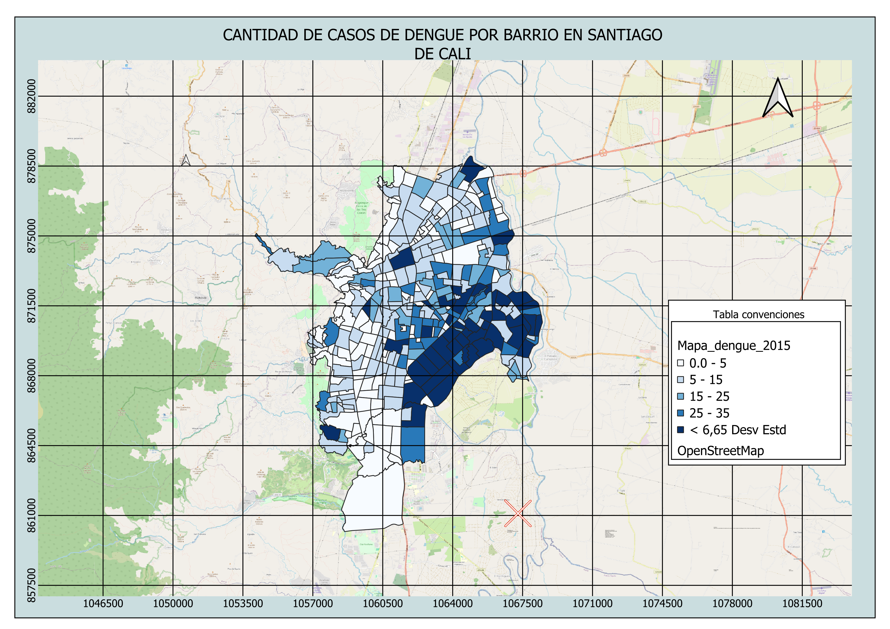

🪟 ¿Qué es el dengue?
El dengue es una enfermedad viral aguda causada por el virus del dengue (DENV), que pertenece al género Flavivirus y presenta cuatro serotipos distintos: DENV-1, DENV-2, DENV-3 y DENV-4. Es transmitido principalmente por el mosquito Aedes aegypti, un vector de hábitos diurnos, domiciliarios y altamente antropofílico.
Clínicamente, se presenta desde fiebre clásica hasta formas graves como el dengue hemorrágico, caracterizado por extravasación plasmática, sangrados severos y disfunción orgánica. Se transmite cuando un mosquito hembra pica a una persona infectada y posteriormente a otras.
Es un problema creciente de salud pública en zonas tropicales y subtropicales, especialmente en América Latina, sudeste asiático y África.

🌆 Contexto histórico y evolución del dengue en Cali
El dengue, enfermedad viral transmitida principalmente por el mosquito Aedes aegypti, ha tenido una presencia intermitente pero significativa en la historia de salud pública de Santiago de Cali. Desde finales del siglo XX, la ciudad ha experimentado un crecimiento urbano acelerado y desorganizado, caracterizado por deficiencias en servicios públicos como el acueducto, el alcantarillado y la recolección de basuras, condiciones que favorecen la proliferación de criaderos del vector. Las primeras alertas sanitarias importantes por brotes epidémicos se registraron en la década de los años noventa, coincidiendo con una intensificación de los procesos migratorios internos y un aumento en la vulnerabilidad de ciertos sectores urbanos.
Durante las dos primeras décadas del siglo XXI, Cali ha atravesado múltiples ciclos epidémicos con incrementos significativos de casos en años como 2010, 2013 y 2016, siendo este último uno de los más críticos. Factores como el cambio climático, las lluvias intensas y la persistencia de criaderos domésticos han consolidado al dengue como un problema de salud pública de carácter endémico en la ciudad. Además, la presencia simultánea de otros arbovirus como chikungunya y zika ha dificultado el diagnóstico oportuno y el control vectorial.
Frente a este panorama, las autoridades locales y nacionales han implementado estrategias de vigilancia epidemiológica apoyadas en tecnologías de georreferenciación, campañas educativas y acciones comunitarias. No obstante, la persistencia del dengue en Cali evidencia la necesidad de abordar el fenómeno desde un enfoque integral que articule factores sociales, ambientales y territoriales. Actualmente, el uso de Sistemas de Información Geográfica (SIG) ha permitido visualizar con mayor precisión la distribución espacial de los casos, identificar zonas críticas y orientar las intervenciones con base en evidencia científica.
🌡️ Factores que favorecen su propagación
- Climáticos: Temperaturas elevadas, alta humedad, lluvias intensas.
- Ambientales/infraestructura: Agua estancada, residuos sólidos, criaderos.
- Socioeconómicos: Pobreza, servicios públicos deficientes, alta densidad.
- Urbanización/movilidad: Urbanización no planificada, movilidad alta.
🐛 Ciclo de vida del mosquito Aedes aegypti
- Huevo: En paredes de recipientes con agua limpia.
- Larva: Se desarrolla en agua, 4 estadios larvales.
- Pupa: Fase flotante, no se alimenta.
- Adulto: Hembra pica para alimentar huevos. Mayor actividad en la mañana y tarde.
Ruiz-Polo et al. (2024) destacan su adaptabilidad en contextos rurales y clímaticamente extremos.
🗌 Zonas críticas y distribución espacial en Cali
- Comuna 3, 6, 7, 13 y 15 concentran la mayor cantidad de casos.
- Altos niveles de criaderos positivos, viviendas precarias y densidad.
- Cercanía a canales, lotes baldíos, servicios públicos deficientes.
Cuartas et al. (2017) muestran correlación entre criaderos positivos y potenciales tanto intra como extradomiciliarios.
🏥 Impacto en la salud pública
- Alta morbilidad en niños y jóvenes.
- Aumento en demanda hospitalaria e ingreso a UCI.
- Presión financiera al sistema de salud.
- Riesgo de mortalidad en casos graves o coinfecciones.
La co-circulación serotípica y falta de vacuna universal aumentan la vulnerabilidad.
🧪 Respuestas institucionales y tecnologías aplicadas
Respuestas institucionales:
- INS: Protocolos de vigilancia activa, pasiva y comunitaria.
- Campañas de eliminación de criaderos y uso de larvicidas.
- Articulación intersectorial local.
Tecnologías aplicadas:
- SIG y teledetección para mapear casos y riesgos.
- Sistemas de Alerta Temprana (SAT) en desarrollo.
- PostgreSQL/PostGIS para bases de datos espaciales.
- Modelos espacio-temporales (Kulldorff) para detectar brotes.
📆 Autores y referencias clave
- Abonia, D. P., et al. (2019). Análisis espacial del dengue en comuna 6 de Cali.
- Cuartas, D. E., et al. (2017). Distribución de criaderos positivos y potenciales.
- Fuertes-Bucheli, J., et al. (2016). Dengue, Zika y chikunguña en Cali.
- INS (2022, 2024). Protocolos y lineamientos nacionales.
- Rocha-Barraza & Ospina-Martínez (2023). Epidemiología del dengue en el Valle.
- De Smith, Goodchild & Longley (2023). Geospatial Analysis.
- Mala & Jat (2019). Análisis espacio-temporal con SIG.